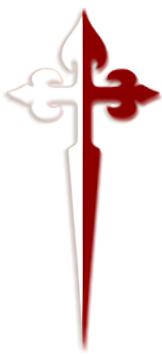

Sobre este site

Este site foi criado para organizar a Adoração ao Santíssimo Sacramento semanal. Aqui você pode escolher, entre os dias e horários disponíveis, um momento para visitar Nosso Senhor Jesus Cristo, consultar os agendamentos que já fez e cancelar caso algo mude — tudo isso sem depender de ligações, recados ou anotações em papel.
Assim, cada horário de adoração fica sempre com alguém responsável, e a coordenação consegue acompanhar em tempo real quem está inscrito em cada dia.
O site foi desenvolvido utilizando tecnologias web modernas e um banco de dados na nuvem que atualiza os horários em tempo real para todos que acessam — evitando que dois agendamentos fiquem marcados para o mesmo horário.
Foi idealizado e desenvolvido por João Victor Chagas Medeiros, com o cuidado de manter uma experiência simples e elegante.
Arautos do Evangelho — Adoração Eucarística
Desenvolvido por João Victor Chagas Medeiros